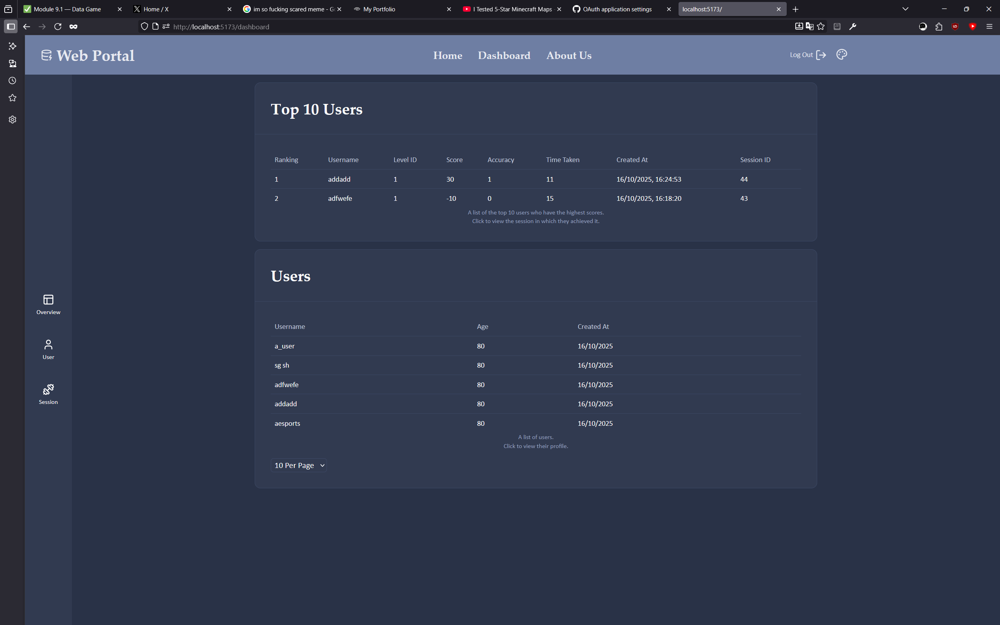

Project Overview:
TORPOR is a horror game that can be played in a single sitting. It was made as an assignment to eventually link to a database.
The plan was simple: create a short game that offered positive and negative stimulus that would eventually be tracked and logged onto a database, with user creation implemented alongside that.
What gave me the most joy with this project was that aside from the few requirements that had to be implemented, we had free choice over everything else. After some brainstorming, I decided to go for a horror game of which the theme is inspired by the ROBLOX game 'SUNDOWNER'.
Creating the database and an API was also important, but luckily very straightforward. I quickly managed to get all the required data to move from Unity onto the database with proper filtering.
The most challenging part was having to create a webportal for the game using Svelte, a UI framework. along with this, we were also taught how to use the Windows Subsystem for Linux, in which we made everything database-related.
Overall, I am very satisfied with how this project turned out. It was a great practice with databases, and it has left me a game I can continue to fine-tune into a playable game for the public.